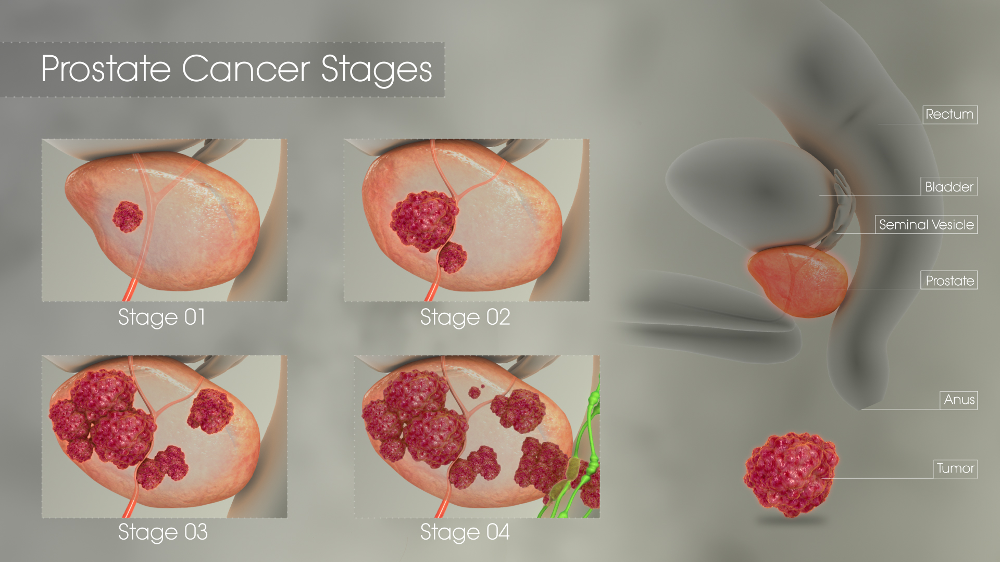

Information
Stages of Prostate Cancer
Stage 1
Cancer in this early stage is usually slow growing. The tumor cannot be felt and involves one-half of 1 side of the prostate or even less than that. PSA levels are low. The cancer cells look like healthy cells.
Stage II
The tumor is found only in the prostate. PSA levels are medium or low. Stage II prostate cancer is small but may have an increasing risk of growing and spreading.
Stage IIA
The tumor cannot be felt and involves half of 1 side of the prostate or even less than that. PSA levels are medium, and the cancer cells are well differentiated. This stage also includes larger tumors found only in the prostate, as long as the cancer cells are still well differentiated.
Stage IIB
The tumor is found only inside the prostate, and it may be large enough to be felt during DRE. The PSA level is medium. The cancer cells are moderately differentiated.
Stage IIC
The tumor is found only inside the prostate, and it may be large enough to be felt during DRE. The PSA level is medium. The cancer cells may be moderately or poorly differentiated.
Stage III
PSA levels are high, the tumor is growing, or the cancer is high grade. These all indicate a locally advanced cancer that is likely to grow and spread.
Stage IIIA
The cancer has spread beyond the outer layer of the prostate into nearby tissues. It may also have spread to the seminal vesicles. The PSA level is high.
Stage IIIB
The tumor has grown outside of the prostate gland and may have invaded nearby structures, such as the bladder or rectum
Stage IIIC
The cancer cells across the tumor are poorly differentiated, meaning they look very different from healthy cells.
Stage IV
The cancer has spread beyond the prostate.
Stage IVA
The cancer has spread to the regional lymph nodes.
Stage IVB
The cancer has spread to distant lymph nodes, other parts of the body, or to the bones.
Recurrent
Recurrent prostate cancer is cancer that has come back after treatment. It may come back in the prostate area again or in other parts of the body. If the cancer does return, there will be another round of tests to learn about the extent of the recurrence. These tests and scans are often similar to those done at the time of the original diagnosis.
Gleason Score
Prostate cancer is also given a grade called a Gleason score. This score is based on how much the cancer looks like healthy tissue when viewed under a microscope. Less aggressive tumors generally look more like healthy tissue. Tumors that are more aggressive are likely to grow and spread to other parts of the body. They look less like healthy tissue.
The Gleason scoring system is the most common prostate cancer grading system used. The pathologist looks at how the cancer cells are arranged in the prostate and assigns a score on a scale of 3 to 5 from 2 different locations. Cancer cells that look similar to healthy cells receive a low score. Cancer cells that look less like healthy cells or look more aggressive receive a higher score. To assign the numbers, the pathologist determines the main pattern of cell growth, which is the area where the cancer is most obvious, and then looks for another area of growth. The doctor then gives each area a score from 3 to 5. The scores are added together to come up with an overall score between 6 and 10.
Gleason scores of 5 or lower are not used. The lowest Gleason score is 6, which is a low-grade cancer. A Gleason score of 7 is a medium-grade cancer, and a score of 8, 9, or 10 is a high-grade cancer. A lower-grade cancer grows more slowly and is less likely to spread than a high-grade cancer. Doctors look at the Gleason score in addition to stage to help plan treatment. For example, active surveillance may be an option for someone with a small tumor, low PSA level, and a Gleason score of 6. People with a higher Gleason score may need treatment that is more intensive, even if the cancer is not large or has not spread.
Gleason Score grading
The Gleason score cannot be determined.
The cells look similar to healthy cells, which is called well differentiated.
Gleason 7 The cells look somewhat similar to healthy cells, which is called moderately differentiated.
Gleason 8, 9, or 10 The cells look very different from healthy cells, which is called poorly differentiated or undifferentiated.